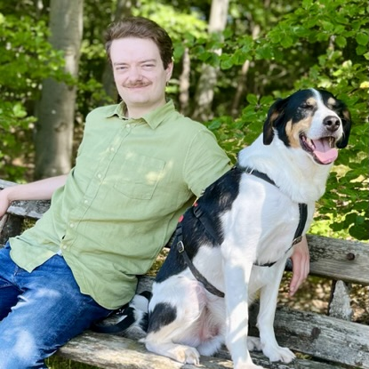

Yannik Höreth

About Me
I'm eager to learn, evolve, and aquire new skills. With a background in
Socioinformatics I looked at Machine Learning Algorithms with regards to
their ethical viability.
As I have been working in Customer Support for several years, my
communication between customers and development is one of my strong points.
Education
- Bachelor of Science, Socioinformatics - RPTU (2016-2023)
Work Experience
-
Working Student as Support Specialist at TOPdesk Deutschland GmbH
February 2021 - ongoing
-
Answered customer service request by phone, email and Self Service
Portal
- Created value by resolving customer service requests
-
Provided valueable feedback to and drom Consultancy and Development
Skills
- Customer service
- Communication skills
- Able to work in a team
Awards and Certifications
Other